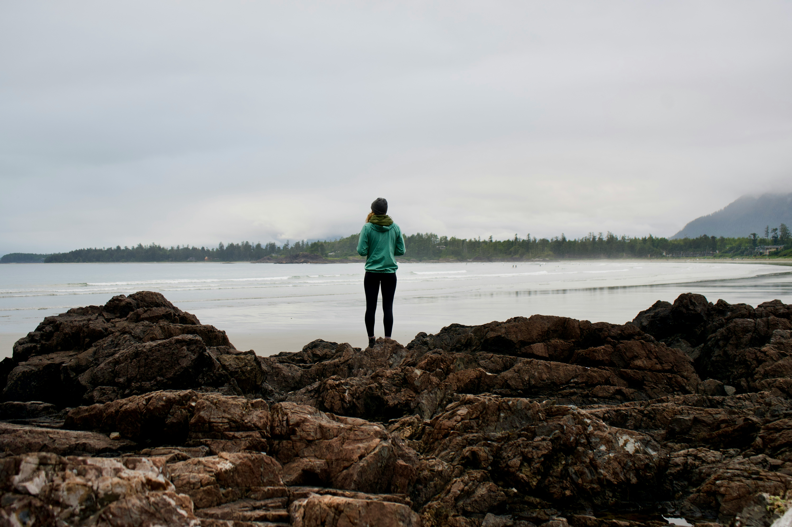
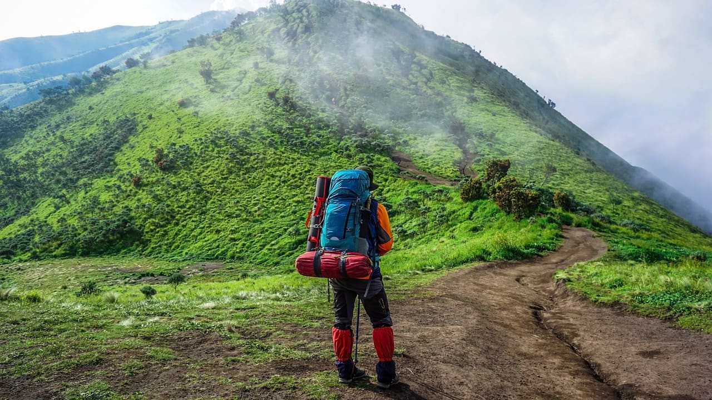
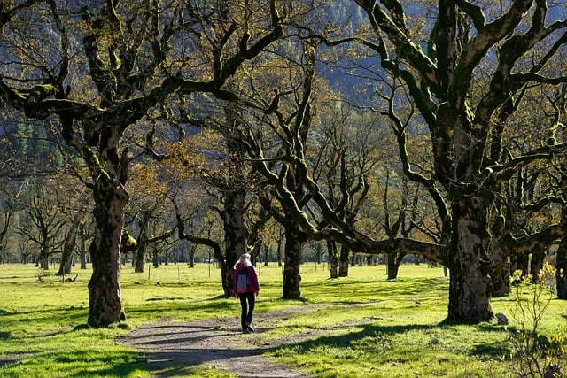

Maria RodriguezCo-Founder & CEO
Environmental scientist turned operator. Designs every route's carbon ledger. Speaks Spanish, Quechua basics, conversational Nepali. Field season: 4 months a year.
Wilderness Medicine
Guiding responsible expeditions since 2015
Boulder, CO · 9 routes · 200+ guides
Drafted in a Sherpa teahouse, signed in Boulder, audited annually since.
We started Adventure Trails Hikes after one trek through Nepal made us question every other operator we'd booked with.
In 2014, Maria Rodriguez and David Chen finished a 21-day Annapurna circuit. Maria was an environmental scientist; David ran an early-stage tech consultancy. They'd been on a dozen guided hikes between them. None of them had felt like this one: co-led by a Sherpa family, four meals a day cooked on a wood stove, every village stop a real exchange instead of a photo op.
The flight home, they sketched out an operator that wouldn't do any of the things their previous trips had done: no extractive pricing that funneled money out of the region, no cultural performance for tourists, no carbon offsets bought after-the-fact as decoration. The pitch was built around three things their Nepal guide, Pemba Sherpa, had said over and over: intention, respect, and leaving less than you take.
Adventure Trails Hikes opened in Boulder, Colorado in March 2015 with three local guides, Pemba being the first, and a single route. Eleven years on we operate nine routes across six regions, partner with two hundred local guides, and keep at least 75% of revenue inside the regions where the trekking happens. We've been carbon-negative since 2021.
None of those numbers are the point. The point is that the route briefing still gets written by the guide who lives at the trailhead, not in Boulder.
Drafted 2015 · Reviewed annually · Last revision Jan 2026
Seventy-five percent of expedition revenue stays inside the region where the trek happens. Local guides are paid mountain-guide wages by Western standards, not local-tourism wages. We publish the revenue split on every route page; if we can't, we don't run that route.
Every expedition is offset 150% via verified reforestation projects we audit ourselves. No marketplace credits, no white-label brokers. Trees get counted by the people who plant them, and the count is published every January.
We don't book cultural performances. Communities host us, on terms they set, in their own language. If a host family decides this season is the wrong one, whether for pregnancy, harvest or grief, we reroute or refund. The trip is not the priority.
Maximum of eight hikers per route. No exceptions for corporate bookings, retreats, or "exclusive" groups. The carrying capacity of the trail dictates the booking, not the booking page.
Every kit on every trip is reusable, repairable, or compostable. Our shared gear library has saved 14 tonnes of landfill since 2018. We publish what fails and how. Failure transparency is not optional, it's load-bearing.
Certified mountain guide on every route. Wilderness medicine, satellite communication, evacuation insurance: all baseline, no upsell. If conditions are wrong, we turn around. We've cancelled four expeditions for weather and refunded every guest in full.
Annotated company history. The ones we list are the ones we'd defend in a pub.
Founded in Boulder by Maria & David after the Annapurna trek. Three guides, one route: the Annapurna Circuit.
Peru and Morocco programs added. Indigenous-community partnership model documented.
Audited carbon-neutral for the first time. Community Water Project Initiative launched in Atlas region.
Audited carbon-negative at a 150% offset. Virtual cultural workshops launched; alumni network passes one thousand members.
25 countries, 200+ local guide partners, nine active routes.
Audited annually by an independent third party. Last audit: January 2026.
Trees Planted
Water Projects
Local Guides
Invested Locally
Awards Won
Countries
Satisfaction Rate
Cultural Workshops
Three of the two-hundred-plus people who actually run the routes. The full guide directory is published with each itinerary.

Maria RodriguezEnvironmental scientist turned operator. Designs every route's carbon ledger. Speaks Spanish, Quechua basics, conversational Nepali. Field season: 4 months a year.
Wilderness MedicineBuilds the booking platform, the carbon-tracking dashboards, and the alumni network. Twelve seasons in the Himalayas. Spends every September in Pokhara.
Tech Innovation
Aisha PatelAnthropologist running our community-partnership work across Asia and Africa. Negotiates host agreements, runs cultural briefings, audits the local-economics commitments.
Cultural Liaison